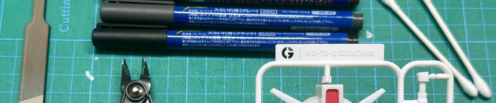
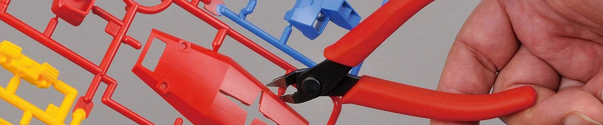
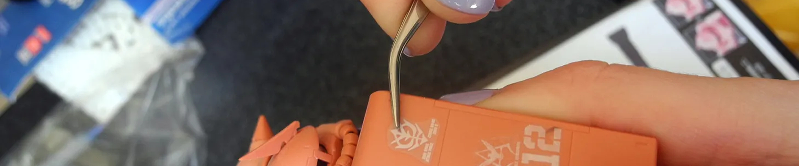
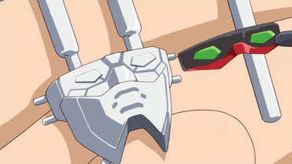
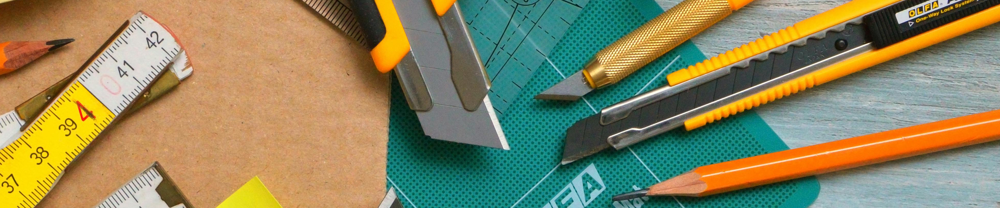
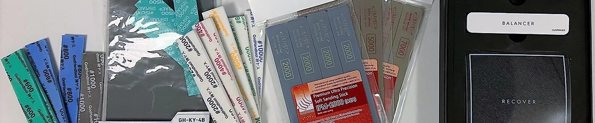

The Absolute Essentials
You may have seen Gunpla builders armed with a huge repository of tools, some of which more expensive than the model kits themselves. Before getting to that point, all you will need are some of the absolute essentials.
The One Requirement: Nippers

Image Source: BANDAI SPIRITS
The most essential—and only tool I would consider a requirement—are a pair of side cutters (aka nippers). These are used to cleanly cut the sprues of the parts out of the runners, preferable to using nail clippers or your hands as they may scratch, damage, or break pieces.
There are two types of nippers: single-bladed and double-bladed. Single-bladed nippers sharply slice plastic, while double-bladed nippers pinch through plastic. While single-bladed nippers have a cleaner cut, they are also far more brittle. Ideally, you will have one of each; a double-bladed nipper to make the first cut on the runner tree, and a single-bladed nipper to cut off the remaining nubs to reduce plastic stress marks.
Generally, double-bladed nippers will be more affordable, and work just fine even as a beginner's only pair of nippers. For further information, visit the article below for detailed recommendations and comparisons:
Tweezers

Image Source: Gunpla 101
Stickers and decals in Gunpla kits can be very tiny, where a pair of tweezers will help you greatly.

A struggle every Gunpla builder will face.
Any pair of tweezers will service you well (you could even use a toothpick or bamboo skewer for this purpose!) Though I recommend angled "crane beak" hobby tweezers with sharp tips for better precision.Realistically, the brand of tweezers doesn't really matter (they're tweezers, for crying out loud!) I personally use this set of tweezers from AliExpress, but finding a pair of tweezers that works for you is the only really important thing.
Hobby Knife

Image Source: Adonyi Gábor, Pexels
When cutting pieces from the runners, you may end up with small pieces of plastic nub left on the piece. A hobby knife lets you scrape away these nubs, as well as cleaning up nub marks.
| Brand | Price Range ($CAD) | Quality | Notes |
|---|---|---|---|
| ⭐Olfa Art Knife Pro | $8.00 | ★★★★★ | Cushion grip available for higher prices |
| ⭐Olfa Heavy-Duty Cutter | $7.00 | ★★★★☆ | Box-cutter style; cusion grip available for higher prices |
| X-ACTO #2 Aluminum Knife | $12.00 | ★★★★☆ | Wide selection of blade sharpness |
There are an infinite amount of hobby knives and similar tools to choose from; I personally use an Olfa box cutter as it's durable and retractable. I've actually gone many builds without using a Hobby Knife, as using the two-cut method and sanding the remaining plastic leads to a similarly clean finish as well.
Sanding Material

Image Source: u/WankerBanker6, Reddit
Speaking of which! Even with two pairs of nippers and a hobby knife, the plastic usually ends up with surface imperfections. That's where sanding material comes in to gradually sand away the plastic nub for a clean finish. Sanding material usually comes in the form of sanding sticks, sanding sponges, or files (usually glass or metal).
For beginners, I highly recommend using a glass file as they do not need to be replaced nearly as often and provide a clean finish relative to the amount of effort needed. While not necessary to build Gunpla, they will make the finished model look much better.
| Brand | Price Range ($CAD) | Quality | Notes |
|---|---|---|---|
| ⭐DSPIAE Siren Glass File | $9.00 | ★★★★☆ | Different shapes available; Identical to Stedi glass file set |
| ⭐GUNPRIMER Gate Remover Set | $60.00 | ★★★★★ | Set of 3 glass files; luxury option, but very efficient |
For detailed recommendations for each type of sanding material and more detail, check out the following article:
Other Tools
If you end up making a mistake when building, you may find yourself needing a parts separator, which can save both the part and your fingernails from damage. Bandai has a relatively cheap parts separator, and metal parts separators are available from various hobby brands. Alternatively, if you (or a library nearby) have access to a 3D printer, you can 3D print a parts separator, or even just DIY one yourself!
To bring your builds to the next level, you may want to consider various detailing tools. From panel liners to paint markers to topcoats, check out this article for a quick rundown!
Afterword
When I started building Gunpla, I only used a pair of double-bladed nippers; sure, the final result wasn't the cleanest, but I was still plenty satisfied. Aside from the nippers, feel free to gradually pick up more tools over time as you need them. If you're patient enough, you can even go back and clean up your old builds!